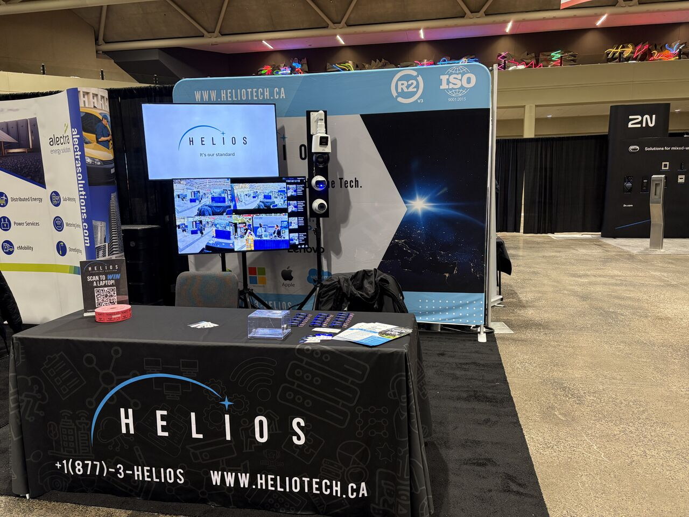
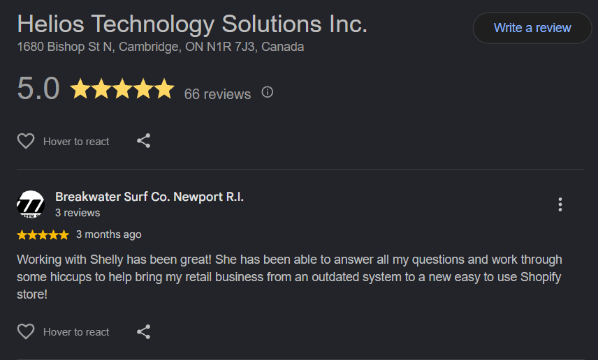

Co-op Work Term Report: Shopify Developer at Helios Technology Solutions
I spent my first co-op term at Helios Technology Solutions moving product catalogues
between commerce systems, writing Shopify tooling, and talking to the store owners on
the other end of it. If you take one thing from this page, take this: almost everything
I learned started with data that did not look the way I expected.
ShellyComputer Science Honours Co-op, University of GuelphHelios Technology SolutionsShopify Developer, 4-month termWorked withPython, Pandas, GraphQL, and AI models for data verification
The employer
Helios; one of Shopify's retail launch partners
Helios Technology Solutions supports data migration for businesses looking to move from a legacy POS system to
Shopify. They support the point of sale, inventory, product catalogues, and the
integrations that come with POS transfer. The computing side of the company is mostly
applied software engineering. It;s a small team, and I was one of two co-op students on it. The work was fast paced and client facing, and I learned a lot about what it means to ship code that is used by real people.
Data migration was the minimum. The job was making something a merchant could trust on
their opening day with Shopify.
What I would tell a student starting the same placement

Goals and learning outcomes
What I set out to get better at, and where I actually landed
I wrote these four goals in my first week, before I knew what the work would look like.
Three of them survived contact with the job. One turned out to be harder than I planned for.
Work in real production code
I wanted to stop building everything from an empty file. Reading someone else's
codebase, following its conventions, and changing it without breaking what was already
working is a different skill than starting fresh, and it is the one I had the least
practice with.
Python · Pandas · GraphQL
Met
Diagnose problems I had not seen before
School problems come with the failure mode attached. I wanted to get comfortable with
bugs where nobody knows the cause yet, including the part where you check your own
assumptions before blaming the system.
Debugging · Testing · Data inspection
Met
Explain technical work to non-technical people
This was the goal I was least sure about. It turned into the most useful one. Client
calls forced me to drop jargon, check that the person actually followed me, and end
with a clear next step rather than a clever explanation.
Client support · Training · Documentation
Met
Design software, not just make it work
I got much better at delivering a working fix. I am still learning to step back and
ask whether the structure around that fix is right, and to write tests before the bug
arrives rather than after. This is the goal I am carrying into my next term.
Architecture · Testing discipline
Partly met
The work
Mostly migration and verification, some building
If I had to weigh the term by hours, most of it was not writing new features. It was moving
product data between systems and then proving that the move had actually worked.
Migrating and verifying catalogue data
This was my main project. I used Python and Pandas to reshape large product exports,
GraphQL to write the results into Shopify, and AI models to help catch what a manual pass
would miss: mismatched categories, near-duplicate SKUs, prices that had drifted from the
source of truth. The transform was the easy half. Proving a few thousand rows had landed
correctly, and flagging the ones that hadn't, was the part that actually took the term.
The lesson was that migration is not copying fields. It is discovering, one broken row at
a time, which business rules were living in someone's head instead of in the data.
Getting stores ready to open
I answered client questions, traced setup issues, and walked people through Shopify POS
workflows before launch. A lot of these were not bugs. They were a gap between what the
system did and what the person expected it to do.
Sitting in that gap regularly is the fastest way I have found to learn what usable
actually means.
Contributing to an existing Shopify app
Alongside the migration work, I spent some time inside an app the team had already
built, using Shopify's Admin GraphQL API. Most of that time went into reading code rather
than writing it: finding the pattern the codebase already used, then matching it.
It was a smaller slice of the term, but the first time I cared whether my change would
confuse the next person who opened the file.
A mapping sketch of the kind I drew before writing any transform code. The interesting
columns are never the ones that line up. They are the field with no source, the one that
splits into two, and the one carrying a value the destination will refuse.

This review was so nice to receive. It showed me my work was making a real impact for
the people on the other end of it, and I loved getting to connect directly with
merchants during the term.
Reflection
Three habits I did not have in April
01
I look at the data before I write the code
My instinct used to be to start typing. Now I open the file first, sort it, count the
nulls, and look for the rows that break the shape I assumed. Most of my worst bugs on
this term were assumptions I could have checked in two minutes.
02
I explain things in the listener's terms
On a client call, being right is not the goal. Being understood is. I learned to name
things the way the store owner names them, check that I was actually followed, and
finish with the one thing they need to do next.
03
I treat tools as one system, not separate subjects
An API, a dataframe, an AI model, and a browser console stopped feeling like four
unrelated courses. Moving between them to chase a single problem is now normal, and
that confidence is probably the most transferable thing I am taking with me.
Conclusion
If you remember one thing
This term connected what I learned at Uni to the real world. I came in able to write code that
passed a test case and left thinking about the person on the other side of it: what their
data actually looks like, what they will assume, and what breaks for them if I do not check my work.
The technical growth is real, and this coop really showed me the real world application of the skills I have been learning. I am grateful for the mentorship and support I received, and I am excited to carry these lessons into my next term.
Acknowledgements
Thank you to the team at Helios Technology Solutions for the mentorship, the honest feedback,
and for trusting a first-term co-op student with work that reached real clients. Thanks also to
the University of Guelph Co-op office and the School of Computer Science for the support.